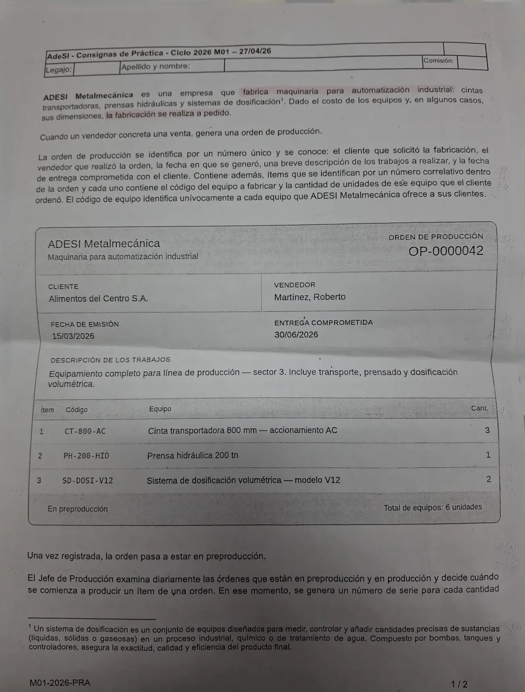
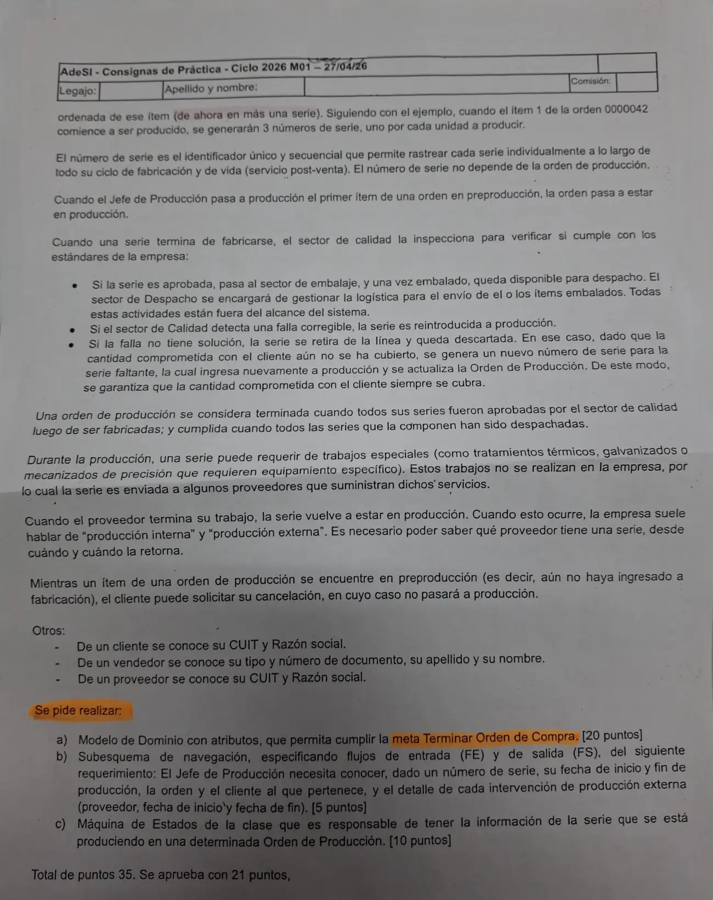

Final, 27/04/2026. Metalmecánica
Final, 27/04/2026
Enunciado




Propuesta de respuesta
Respuesta no verificada. La propuso Luta Studios con inteligencia artificial y ningún docente la revisó. Puede tener errores.
La consigna dice «meta Terminar Orden de Compra». El relato no habla de órdenes de compra, así que se tomó como la orden de producción, que queda terminada cuando todas sus series fueron aprobadas por calidad.
a) Modelo del dominio
La serie no depende de la orden, como dice el relato, pero se llega a ella por el ítem que la generó. La serie descartada queda registrada y la nueva la reemplaza, así la cantidad comprometida siempre se cubre. Embalaje y despacho están fuera del alcance. Tocá el dibujo para verlo en pantalla completa.
Estados posibles de OrdenProduccion.estado: en preproducción, en producción y terminada. De ItemOrden.estado: en preproducción, cancelado y en producción.
b) Subesquema de navegación
FE consultaSerie = nroSerie
FS detalleSerie = [nroSerie + fechaInicioProduccion + (fechaFinProduccion) + numeroOrden + cuitCliente + razonSocialCliente + [1{razonSocialProveedor + fechaInicio + (fechaFin)}n | msgSinProduccionExterna] | msgSerieInexistente]ItemOrden es un objeto de paso: se recorre para llegar a la orden, pero no se recupera nada de él.
c) Máquina de estados de Serie
Serie es la clase que tiene la información de lo que se está produciendo en una orden. Las transiciones van con la forma actor o tiempo + verbo + objeto y la guarda entre corchetes. Tocá el dibujo para verlo en pantalla completa.
Respuesta no verificada. Puede tener errores.
Se armó con la página del 2° parcial (modelo del dominio, composición, subesquema de navegación y máquina de estados). La forma sigue el modelo del dominio y el diagrama de estados de las resoluciones del 02/11/24 y del 26/05/25.
Quedó en duda: «Terminar Orden de Compra» se leyó como terminar la orden de producción. La inspección se modeló como clase para guardar cada resultado, porque una serie puede volver a producción y ser inspeccionada otra vez. También alcanza con un estado en Serie. Que la serie de reemplazo nazca en el mismo estado que las demás es una lectura del relato. La notación del diccionario de datos sale de un resumen de alumno.
¿Cómo te fue?
Marcá cada tema del examen.
- Modelo del dominioModelo del dominio, en 2° parcial
- SubesquemaSubesquema de navegación, en 2° parcial
- Máquina de estadosMáquina de estados, en 2° parcial